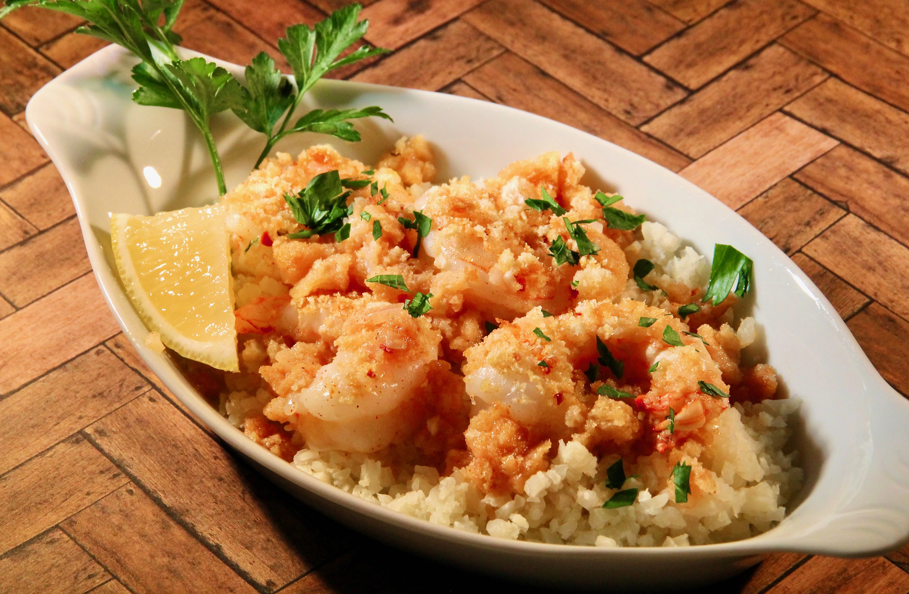

Baked Shrimp Scampi
Description
- Preparation time: 10 mins
- Cook: 15 mins
- Total: 25 mins
- Servings: 4
- Yield: 4 servings
Ingerdients
- 16 large shrimp, peeled and deveined
- 1 tablespoon butter
- 2 tablespoons minced garlic
- 1 tablespoon minced shallot
- 1 teaspoon olive oil
- ¼ cup chicken stock
- 2 tablespoons freshly squeezed lemon juice
- ¼ teaspoon red pepper flakes
- ⅛ teaspoon ground paprika
- salt and ground black pepper to taste
- ¼ cup crushed garlic croutons
- 3 cups frozen riced cauliflower (such as Green Giant®)
- 3 tablespoons chopped fresh parsley
- 4 lemon wedges
Steps
- Preheat the oven to 350 degrees F (175 degrees C). Place shrimp in a shallow baking dish.
- Melt butter in a small saucepan over medium heat. Add garlic, shallot, and olive oil and cook until fragrant, about 1 minute. Stir in chicken stock, lemon juice, red pepper flakes, paprika, salt, and pepper. Pour this mixture over shrimp and sprinkle with crushed croutons.
- Bake in the preheated oven until shrimp are bright pink on the outside and the meat is opaque, 9 to 11 minutes; do not overcook.
- While shrimp is cooking, place riced cauliflower in a large nonstick skillet. Cook over medium heat, stirring occasionally, until hot, about 5 minutes.
- Serve shrimp over riced cauliflower. Garnish with chopped parsley and lemon wedges.